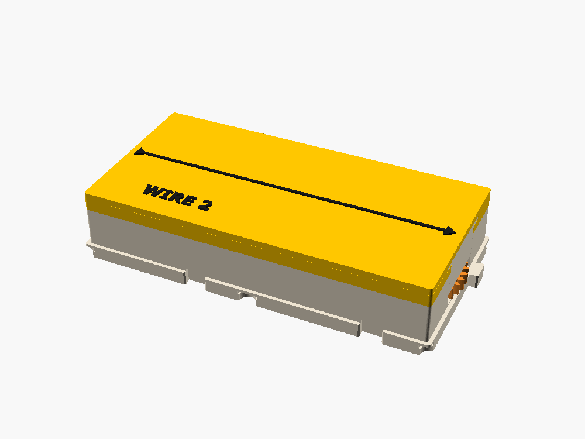
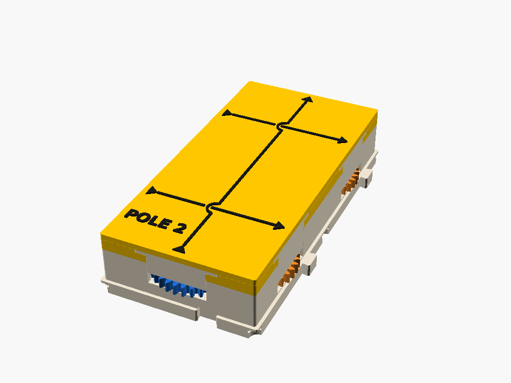
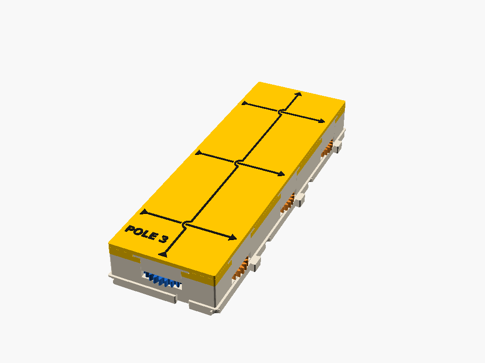

WIRE 2 · WIRE 3 · POLE 2 · POLE 3
Routing · fit-checked, not printed · 2x1, 3x1, 1x2, 1x3 cells · cost 2 a cell
The WIRE box, two or three cells long. WIRE 2 and WIRE 3 carry the main line east; POLE 2 and POLE 3 carry the power line north. Paul asked for them (2026-10-27): long runs between boxes took a row of single WIREs, each one a shell, a lid, four keepers and a joint.




What they do
Straight through, x1, forward, like a row (or a column) of WIREs. A POLE also keeps, in every cell, the W → E channel a WIRE has, so rows can cross it anywhere along its length. A long WIRE carries the main line only (see "Why it is built this way").
| Box | Cells | Main line | Meshes | Cross channels |
|---|---|---|---|---|
| WIRE 2 | 2x1 | W → E, layer 1 | 3 | none |
| WIRE 3 | 3x1 | W → E, layer 1 | 5 | none |
| POLE 2 | 1x2 | S → N, layer 2 | 3 | W1 → E1, W2 → E2 (layer 1) |
| POLE 3 | 1x3 | S → N, layer 2 | 5 | W1 → E1 … W3 → E3 |
Ports and lanes
Every port is 32 teeth on lane B, as on WIRE. Main line ports: W and E (WIRE n) or S and N (POLE n). A POLE's cross ports: W*k* and E*k*, one pair per cell, numbered from the south.
Train, WIRE 3: W (32) → I1 → I2 → I3 → I4 (32 each, layer 1) → E (32), all 32 mm apart on the center line, 16 + 32 · 4 + 16 = 160 mm between the ports. WIRE 2 has two idlers. POLE n is the same turned onto the other axis: the idlers run up the middle on layer 2, and in each cell W*k* (32) → E*k* (32) crosses on layer 1, one mesh.
Torque cost
2 a cell (WIRE 2 and POLE 2: 4, WIRE 3 and POLE 3: 6, on the main line; 2 on each of a POLE's cross channels). That is what the same number of WIREs costs, because it is the same train: the idlers sit exactly where the WIREs' port gears would sit. A long wire saves parts, not stages.
Why it is built this way
- The same train as a row of WIREs. 32-tooth gears 32 mm apart reach from edge to edge with an odd number of meshes, so the line stays forward. Bigger idlers would cut the count but don't fit: a 3-mesh WIRE 3 needs two 64-tooth idlers, wider than a cell.
- What you gain: one shell and one lid instead of two or three, two keepers instead of four to six, and the joints between cells are inside one shell, so those meshes sit at an exact center distance instead of depending on two plinths and their keys.
- Cross channels on POLE only. On a POLE the cross gears sit on layer 1, under the idlers, and go in first, as every box's ports do. On a WIRE n they would sit on layer 2 over the idlers, so the idlers would have to go in before them: the fit check's drop-in test fails that way (the etch-a-sketch thread found the same). A column crosses a long WIRE's row with a WIRE between two lengths, or the design thread can add an assembly-order option to gbs.scad and give WIRE n its S → N channels back.
- Not a drive shaft. A horizontal shaft with a miter at each end would cost the same however long it is. It is a good later box (PLOT already has the parts on its lid); these are the simple ones Paul asked for.
Parts and colors
| Part | Role | Color |
|---|---|---|
| shell (2 or 3 cells, band in the family color), keepers | structure | bone |
| lid | Routing | Sunflower Yellow, black lettering |
| W and S port gears (W*k* on a POLE) | input | blue |
| E and N port gears (E*k* on a POLE) | output | orange |
| idlers I1 … I4 | transmission | white |
Every gear carries its box tag and gear id on its bed face (lib/labels.scad), as on every box.
How to assemble it
- Wipe a PTFE dry film on every pin.
- The port gears, then the idlers from the west (or south) end, then the keepers, then the lid.
- Each idler holds itself with a hub up to the lid.
What it teaches
- An idler never changes the ratio, only the direction: count the meshes.
- Why one long box beats several short ones: fewer joints, fewer places to misalign.